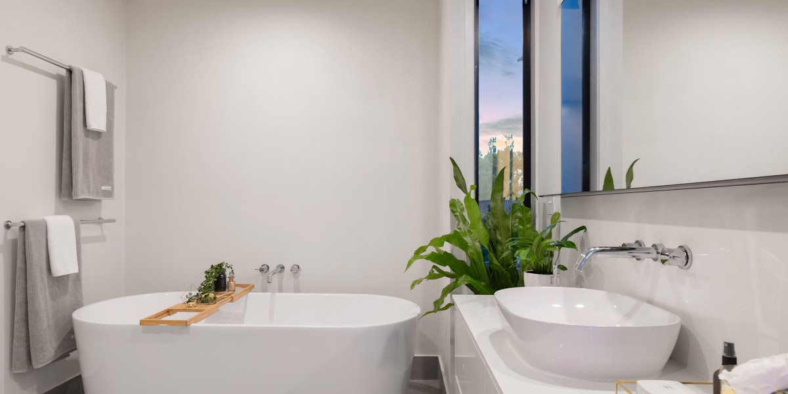
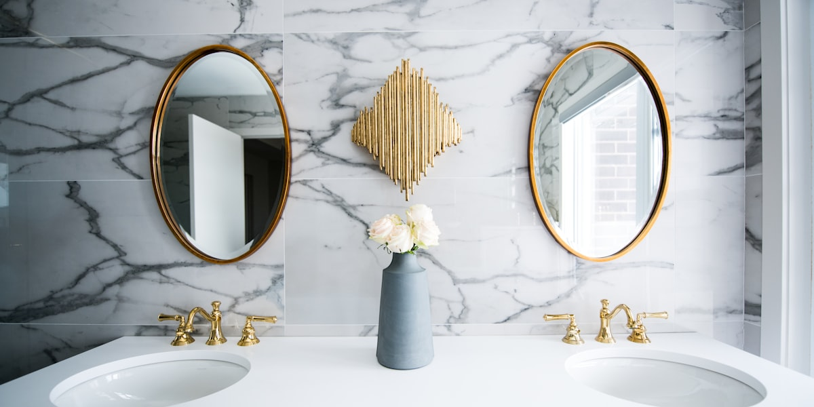

Душ или ванна? Вопрос, который мучает многих при ремонте. В интернете полно противоречивых советов, а друзья и родственники дают прямо противоположные рекомендации. Давайте разберем 7 самых популярных мифов и выясним, что же на самом деле обеспечит комфорт именно в вашей ванной.
Важно понимать: выбор индивидуален
Прежде чем перейти к мифам, запомните главное: выбор между душем и ванной зависит от вашего образа жизни, размера помещения и состава семьи, а не от универсальных правил комфорта.
Миф 1: Ванна всегда обеспечивает лучшую релаксацию
❌ МИФ
Ванна — это гарантированная релаксация для всех.
✅ РЕАЛЬНОСТЬ
Действительно, ванна дает возможность для глубокого расслабления с солями и ароматическими маслами. Но это больше подходит тем, кто предпочитает размеренный образ жизни и готов тратить 30-60 минут на процедуру.
Важная цифра: Для полноценного погружения среднего человека требуется ванна размером минимум 170 × 70 см. В ванне размером 120 × 70 см можно только сидеть.

Миф 2: Душ — только для спешащих людей
❌ МИФ
Душ не обеспечивает комфорта, это вариант для тех, кто всегда спешит.
✅ РЕАЛЬНОСТЬ
Душ — это практичное решение для активных людей, но это не означает отсутствие комфорта. Современные душевые системы с тропическим душем, гидромассажем и термостатом могут быть не менее расслабляющими.
Бонус: Душ экономит воду по сравнению с ванной, особенно при использовании водосберегающих леек.
Миф 3: Ванна экономит место
❌ МИФ
Ванна компактнее душевой кабины.
✅ РЕАЛЬНОСТЬ
Ванна занимает большую часть санузла. Экономию места обеспечивает именно душевая кабина или walk-in зона.
Практика: В стандартной российской ванной комнате площадью около 4 кв. метров, душевая кабина освобождает до 40% пространства по сравнению с ванной.

Миф 4: Ванна менее безопасна
❌ МИФ
Ванна опаснее душа из-за скользкой поверхности.
✅ РЕАЛЬНОСТЬ
Как ванна, так и душ могут представлять опасность, если не соблюдать основные правила безопасности: антискользящие коврики, поручни, правильное освещение.
Преимущество ванны: Возможность купания детей, домашних животных и выполнения бытовых задач (замачивание белья). К тому же, в ванне можно проводить spa-процедуры с гидромассажем.
Сравнение по ключевым параметрам
🛁 ВАННА
Плюсы:
- Глубокая релаксация
- Купание детей
- Spa-процедуры
- Бытовые нужды
Минусы:
- Занимает много места
- Больший расход воды
- Долгое наполнение
🚿 ДУШ
Плюсы:
- Экономия пространства
- Экономия воды
- Быстрота
- Гигиеничность
Минусы:
- Нет возможности полежать
- Сложности с купанием детей
- Меньше вариантов spa
Что действительно важно при выборе?
Забудьте про мифы и сосредоточьтесь на реальных факторах:
- Площадь ванной комнаты — в помещении менее 4 кв.м душ предпочтительнее
- Состав семьи — есть ли маленькие дети или домашние животные
- Ваш образ жизни — активный (душ) или размеренный (ванна)
- Бюджет — качественная душевая система может стоить дороже простой ванны
- Коммунальные расходы — готовы ли платить за больший расход воды
Заключение
Каждый выбор имеет свои плюсы и минусы. Важно делать его, исходя из своих реальных потребностей, а не гонясь за модными трендами или слушая мифы.
Помните: ванная комната должна быть комфортной именно для вас и вашей семьи. Это не вопрос престижа — это вопрос удобства в повседневной жизни.